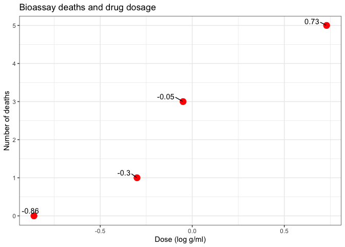

Bayes multiparameter models
Last update:
## [1] "2024-11-30"
This doc was built with: rmarkdown::render("bayesian_demo3_1_4.Rmd", output_file = "../pages/bayesian_multiparameter_models.md")
This example is described in the textbook: Bayesian Data Analysis, by Andrew Gelman, John Carlin, Hal Stern, David Dunson, Aki Vehtari, and Donald Rubin. Third edition, (BDA3), http://www.stat.columbia.edu/~gelman/book/, chapter 3. The code is based on a version by Aki Vehtari and Markus Paasiniemi.
- Section 3.2: Discusses the normal distribution with unknown mean and variance.
- Sections 3.4 and 3.5: Address inference for the multinomial and multivariate normal distributions, the simplest models for discrete and continuous multivariate data, respectively.
- Conclusion: The chapter concludes with an examination of a nonconjugate logistic regression model, implemented via numerical computation of the posterior density on a grid.
Introduction to nuisance parameters in Bayesian statistics
In the realm of statistics, nearly every practical problem encompasses multiple unknown or unobservable quantities. The simplicity of the Bayesian approach shines when managing such complexities, offering clear advantages over alternative methods of inference. Often, although a problem may present several parameters of interest, attention is usually focused on just one or a few.
Definitions
Marginal posterior distribution: The probability distribution of the parameters of interest, obtained by integrating out the nuisance parameters from the joint posterior distribution.
Nuisance parameters: Parameters included in the model to enhance its realism and validity, though they are not the primary focus of analysis.
Joint posterior distribution: The probability distribution representing the likelihood of all parameter values given the observed data.
Aim of Bayesian analysis
The primary goal of Bayesian analysis is to determine the marginal posterior distribution of the parameters of interest. This is achieved through a two-step process:
- Obtaining the joint posterior distribution: Initially, the complete joint posterior distribution encompassing all unknowns is required.
- Integrating over nuisance parameters: Subsequently, this distribution is integrated over the parameters that are not of immediate interest, yielding the desired marginal distribution.
Alternatively, by using simulation:
- Simulation sampling: Samples are drawn from the joint posterior distribution, concentrating on the parameters of interest and disregarding the values of other unknowns.
Nuisance parameters
Frequently in statistical problems, many parameters, although essential for constructing a realistic model, are not the focus of inference. These parameters are typically referred to as nuisance parameters.
Example: An exemplary instance of nuisance parameters is the scale of random errors in measurement problems.
Averaging over ‘Nuisance Parameters’
Explanation of symbols
\(\theta\): Total parameters of interest, split into two components \(\theta_1\) and \(\theta_2\).
\(\theta_1\) and \(\theta_2\): \(\theta_1\) represents parameters of primary interest, while \(\theta_2\) represents nuisance parameters.
\(y\): Observed data.
\(\mu\) and \(\sigma^2\): Parameters commonly used in normal distribution models, where \(\mu\) is the mean and \(\sigma^2\) is the variance.
\(p(\theta_1 \mid y)\): Marginal posterior distribution of \(\theta_1\) given data \(y\).
\(p(\theta_1, \theta_2 \mid y)\): Joint posterior distribution of \(\theta_1\) and \(\theta_2\) given data \(y\).
\(\mathcal{N}(\mu, \sigma^2)\): Normal distribution with mean \(\mu\) and variance \(\sigma^2\).
To express the ideas of joint and marginal posterior distributions mathematically, suppose \(\theta\) has two parts, each of which can be a vector, \(\theta = (\theta_1, \theta_2)\), and further suppose that we are only interested (at least for the moment) in inference for \(\theta_1\), so \(\theta_2\) may be considered a ‘nuisance’ parameter. For instance, in the simple example,
\[y \mid \mu, \sigma^2 \sim \mathcal{N}(\mu, \sigma^2),\]in which both \(\mu\) (equivalent to \(\theta_1\)) and \(\sigma^2\) (equivalent to \(\theta_2\)) are unknown, interest commonly centers on \(\mu\). We seek the conditional distribution of the parameter of interest given the observed data; in this case, \(p(\theta_1 \mid y)\). This is derived from the joint posterior density,
\[p(\theta_1, \theta_2 \mid y) \propto p(y \mid \theta_1, \theta_2)p(\theta_1, \theta_2),\]by averaging over \(\theta_2\):
\[p(\theta_1 \mid y) = \int p(\theta_1, \theta_2 \mid y) \, d\theta_2.\]Alternatively, the joint posterior density can be factored to yield
\[\begin{equation} p(\theta_1 \mid y) = \int Z p(\theta_1 \mid \theta_2, y) p(\theta_2 \mid y) d\theta_2, \tag{1}\label{eq:one} \end{equation}\]which shows that the posterior distribution of interest, \(p(\theta_1 \mid y)\), is a mixture of the conditional posterior distributions given the nuisance parameter, \(\theta_2\), where \(p(\theta_2 \mid y)\) is a weighting function for the different possible values of \(\theta_2\). The weights depend on the posterior density of \(\theta_2\) and thus on a combination of evidence from data and prior model. The averaging over nuisance parameters \(\theta_2\) can be interpreted generally; for example, \(\theta_2\) can include a discrete component representing different possible sub-models.
We rarely evaluate the integral (eqn \ref{eq:one}) explicitly, but it suggests an important practical strategy for both constructing and computing with multiparameter models. Posterior distributions can be computed by marginal and conditional simulation, first drawing \(\theta_2\) from its marginal posterior distribution and then \(\theta_1\) from its conditional posterior distribution, given the drawn value of \(\theta_2\). In this way, the integration embodied in (eqn \ref{eq:one}) is performed indirectly. A canonical example of this form of analysis is provided by the normal model with unknown mean and variance, to which we now turn.
Explanation of averaging over nuisance parameters
Let’s break down the equation to show how the joint posterior distribution is constructed from the likelihood and the prior distribution.
Objective
To derive the marginal posterior distribution of \(\theta_1\) by integrating out \(\theta_2\), considered a nuisance parameter, from the joint posterior distribution.
Step-by-step breakdown
- Joint posterior distribution:
- Equation: \(p(\theta_1, \theta_2 \mid y) \propto p(y \mid \theta_1, \theta_2) \times p(\theta_1, \theta_2)\)
- Explanation: This formula shows the joint posterior distribution as a product of the likelihood of the data given the parameters and the prior beliefs about these parameters. The term “proportional to” indicates that after considering the likelihood and prior, the result must be normalised to ensure it sums to one across all possible values of \(\theta_1\) and \(\theta_2\).
- Visual breakdown:
- Prior layer: Represents initial beliefs about the parameters before seeing the data.
- Likelihood layer: Adjusts beliefs based on how likely the observed data is under various parameter values.
- Normalisation: Ensures the total probability across all parameter values equals one.
- Marginal posterior distribution:
- Equation: \(p(\theta_1 \mid y) = \int p(\theta_1, \theta_2 \mid y) \, d\theta_2\)
- Explanation: By integrating out \(\theta_2\), this operation focuses solely on \(\theta_1\), summing over all potential influences of \(\theta_2\) to isolate the effect on \(\theta_1\). This represents averaging over all possible values of \(\theta_2\), which adjusts \(\theta_1\)’s distribution to reflect its combined impact.
- Factorisation and practical computation:
- Equation: \(p(\theta_1 \mid y) = \int Z p(\theta_1 \mid \theta_2, y) p(\theta_2 \mid y) d\theta_2\)
- Components:
- \(p(\theta_1 \mid \theta_2, y)\): The conditional posterior of \(\theta_1\) given \(\theta_2\) and data.
- \(p(\theta_2 \mid y)\): Acts as a weighting function in the integration, representing the marginal posterior of \(\theta_2\).
- Explanation: This factorisation views the marginal posterior as a weighted average of conditional posteriors, emphasising a practical simulation-based method to handle complex integrations.
- Simulation as a practical solution:
- Procedure:
- Draw \(\theta_2\): From its marginal posterior distribution.
- Draw \(\theta_1\): From the conditional distribution given the sampled \(\theta_2\).
- Explanation: This simulation effectively performs the integration by sampling, which is useful when direct computation is infeasible or impractical.
- Procedure:
To visualise how these components come together, you can think of it as layers:
- Base layer (Prior distribution): Start with your initial beliefs about the parameters (before seeing the data).
- Middle layer (Likelihood): Adjust these beliefs by the likelihood of the observed data under various parameter values.
- Top layer (Normalisation): Scale the result so that the total probability across all parameter values equals 1.
Step-by-step visualization
The goal of these visualizations is to explore the effects of the nuisance parameter \(\theta_2\) on the distribution of \(\theta_1\). We first observe the overall distribution of \(\theta_2\) and then focus on how specific values influence \(\theta_1\).
Step 1: Visualizing the distribution of \(\theta_2\)
We start by drawing a histogram to understand the typical range and distribution of \(\theta_2\). This visualization helps identify the common values and the spread of \(\theta_2\). For detailed analysis, we specifically highlight the bar at \(x = 1\) to observe its frequency and to mark it for further scrutiny.
# Simulate some data
set.seed(123)
data <- data.frame(
theta1 = rnorm(10000),
theta2 = rnorm(10000)
)


Step 2: Examining the effect of a highlighted \(\theta_2\) on \(\theta_1\)
Next, we demonstrate how varying \(\theta_2\) affects \(\theta_1\) by creating conditional histograms. We highlight the range around \(x = 1\) to see how \(\theta_1\) behaves when \(\theta_2\) is near this specific value. This step visualizes the conditional effects of \(\theta_2\) on \(\theta_1\) across different slices, with a particular focus on the highlighted region.

Integrating out \(\theta_2\) in Bayesian analysis is about marginalizing over this parameter to refine our estimates for \(\theta_1\). This involves averaging over all possible values of \(\theta_2\), where each value is weighted by its likelihood:
- Highlighting an example value: By highlighting \(x = 1\) in the visualizations, we’re not limiting our analysis to this point but rather using it to exemplify how specific values within the range of \(\theta_2\) can influence the outcome for \(\theta_1\). It serves as a focal point for comparison.
- Complete integration: The full integration over \(\theta_2\) considers every part of its distribution. Each histogram slice contributes to a comprehensive understanding of how \(\theta_1\) is influenced by the entire spectrum of \(\theta_2\).
Normal model with unknown mean and variance (BDA3 section 3.2 on p. 64).
Multivariate joint distribution, conditional distribution, marginal distribution, marginalization and posterior predictive distribution
ggplot2, grid, and gridExtra are used for plotting, tidyr for manipulating data frames
Generic part common for Demos 3.1-3.4
Data
y <- c(93, 112, 122, 135, 122, 150, 118, 90, 124, 114)
Sufficient statistics
n <- length(y)
s2 <- var(y)
my <- mean(y)
Factorize the joint posterior p(mu,sigma2|y) to p(sigma2|y)p(mu|sigma2,y) Sample from the joint posterior using this factorization
# helper functions to sample from and evaluate
# scaled inverse chi-squared distribution
rsinvchisq <- function(n, nu, s2, ...) nu*s2 / rchisq(n , nu, ...)
dsinvchisq <- function(x, nu, s2){
exp(log(nu/2)*nu/2 - lgamma(nu/2) + log(s2)/2*nu - log(x)*(nu/2+1) - (nu*s2/2)/x)
}
Sample 1000 random numbers from p(sigma2|y)
ns <- 1000
sigma2 <- rsinvchisq(ns, n-1, s2)
Sample from p(mu|sigma2,y)
mu <- my + sqrt(sigma2/n)*rnorm(length(sigma2))
Create a variable sigma and sample from predictive distribution p(ynew|y) for each draw of (mu, sigma)
sigma <- sqrt(sigma2)
ynew <- rnorm(ns, mu, sigma)
For mu, sigma and ynew compute the density in a grid ranges for the grids
t1l <- c(90, 150)
t2l <- c(10, 60)
nl <- c(50, 185)
t1 <- seq(t1l[1], t1l[2], length.out = ns)
t2 <- seq(t2l[1], t2l[2], length.out = ns)
xynew <- seq(nl[1], nl[2], length.out = ns)
Compute the exact marginal density of mu
# multiplication by 1./sqrt(s2/n) is due to the transformation of
# variable z=(x-mean(y))/sqrt(s2/n), see BDA3 p. 21
pm <- dt((t1-my) / sqrt(s2/n), n-1) / sqrt(s2/n)
Estimate the marginal density using samples and ad hoc Gaussian kernel approximation
pmk <- density(mu, adjust = 2, n = ns, from = t1l[1], to = t1l[2])$y